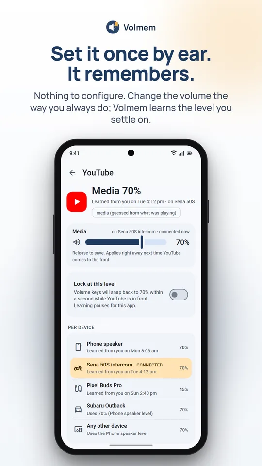
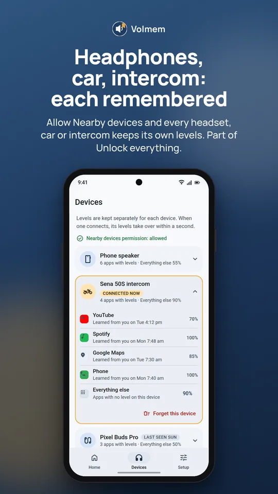
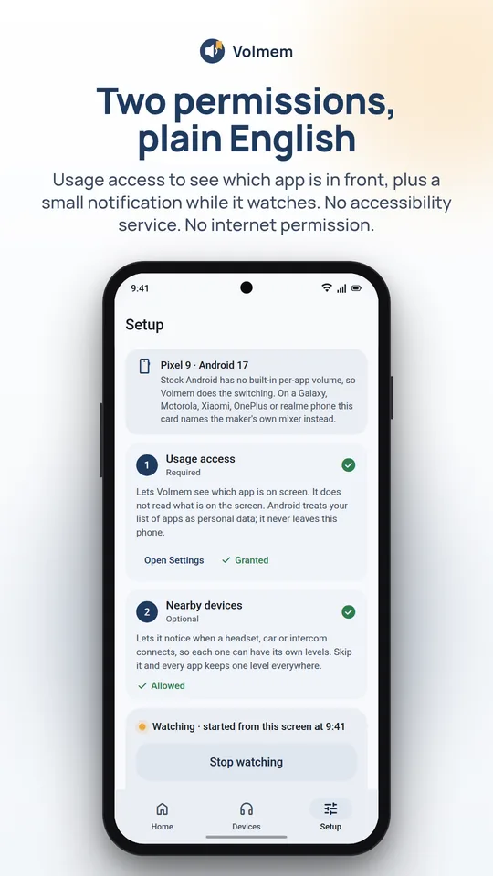
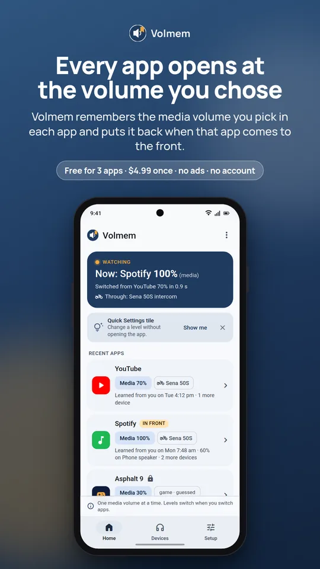
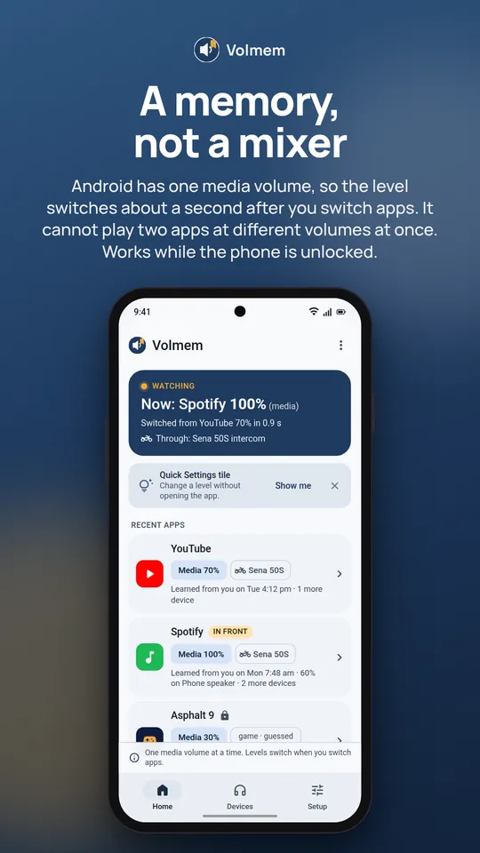

What it looks like
A memory, not a mixer



Set it once by ear. It's already there next time you open the app.
Volmem remembers the media volume you pick while each app is on screen and puts it back the moment that app comes to the front again. Nothing to configure. It learns as you use the phone.
Android 10 and newer · Free for 3 apps · $4.99 once to unlock everything · No ads, no subscription, no internet permission

What it looks like



Features
There are no rules to write and no profiles to build. Tap Start watching once, then change the volume like you always do. Volmem does the remembering.
Adjust the volume the way you always do, leave it for three seconds, and Volmem remembers that level for the app in front. No rules to write, no lists to fill in.
Open the app again and, about a second later, the volume is what you chose last time. Podcasts quiet, the kids' game loud, navigation louder.
Optional. Let Volmem see nearby devices and each Bluetooth headset, car stereo or helmet intercom keeps its own set of levels, separate from the phone speaker.
One default level for apps you have not set yet, so a brand-new app does not blast.
A Quick Settings tile opens a small panel with one slider: set it for this app, or just this once.
Lock an app at a level and the volume keys snap back within a second. Or tell Volmem not to learn a particular app at all.
How it works
Volmem shows you exactly what it reads and saves, then opens the Android setting. That is how it knows which app is in front.
A small notification stays up while it runs, with a Stop button. Volmem only ever starts when you tap.
Set the volume by ear in each app. From then on it is already there when you come back.
Read this first
A memory, not a mixer. Android has one media volume for the whole phone. Volmem cannot make two apps play at different levels at the same time. If music keeps playing in the background while a game is in front, the music plays at the game's level.
If your phone maker already has a real per-app mixer (some Samsung, Motorola, Xiaomi, OnePlus and realme phones do), Volmem tells you on the Setup screen.

Pricing
Try it free with three apps. Unlock everything for a one-time purchase through Google Play. Levels never reset.
Volmem remembers 3 apps, forever.
Paid through Google Play, kept forever on your Google account. No subscription, no ads, no Pro package.
FAQ
No, and neither can any app on stock Android without root. There is one media volume. Volmem puts back the level you chose for whichever app is in front and switches it when you switch apps.
It is the only way to learn which app is on screen without an accessibility service. Volmem reads just the app's name, keeps it on your phone, and never sends it anywhere. It has no internet permission, so it could not even if it wanted to.
Android requires a visible notification for anything that keeps running while you use other apps. It shows the app in front and its level, and has a Stop button. Tap Stop and Volmem stops.
It asks Android which app is in front about once a second and sets the volume when that changes. It does not read the screen, record audio or keep the CPU awake. If your phone's battery manager stops it, Volmem says Paused rather than pretending to run.
Permissions
Two permissions do the job. Everything else is optional and explained on screen before Android asks.
Free for three apps. No ads, no subscription, no internet permission.